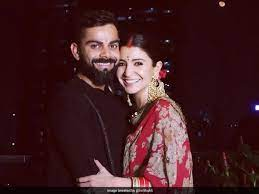

Enjoying Festivals
Step into the festive spirit with Virat Kohli through this delightful image gallery, showcasing the cricketing icon's vibrant celebrations of various festivals. Beyond the boundaries of cricket, these images offer a glimpse into Kohli's cultural roots and his zest for life's colorful festivities.
Experience the joy and camaraderie as Kohli immerses himself in the traditions and rituals of festivals, from Diwali to Holi and beyond. These images capture the exuberance of Kohli's celebrations, as he rejoices in the company of family and friends, spreading cheer and happiness.
Witness Kohli's genuine enthusiasm and reverence for cultural festivities as he partakes in rituals, lights lamps, and indulges in festive delicacies. From vibrant colors to infectious laughter, each frame resonates with the spirit of togetherness and unity that festivals bring.
Join us in celebrating the cultural diversity and joyous spirit of Virat Kohli, where each image serves as a reminder of the importance of embracing traditions and cherishing moments of celebration with loved ones. Through these frames, we honor Kohli's unwavering commitment to preserving and promoting the rich tapestry of India's cultural heritage.
Delve into the festive joy with Virat Kohli through these captivating images, as he embraces cultural traditions and celebrates festivals with zest, spreading happiness and togetherness with loved ones
